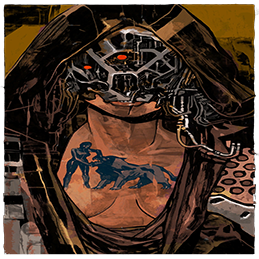
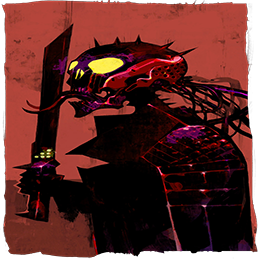
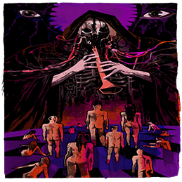

-
0
O Louco
Descrição
O Louco é a carta de número 0 da sequência de arcanos maiores. Ele também é considerado o arcano de número 22, pois representa o herói da jornada pelo tarot, que percorre cada estágio a fim de aprender e evoluir.
Ele representa o arquétipo do andarilho, que parte em busca da liberdade e do autoconhecimento, e o arquétipo do Puer Aeternus, ou seja, da Eterna Criança que há dentro de cada um de nós e que nos motiva a viver com otimismo, entusiasmo e ingenuidade.
Embora o arcano conte com aspectos positivos, ele também pode expressar um lado negativo, simbolizando a impulsividade, a imprudência, a imaturidade e a inconstância. -
1
O Mago

Descrição
O Mago é a carta de número 1 da sequência de arcanos maiores. Assim como a sua posição no tarot evidencia, ele representa o início de uma nova jornada.
Ele representa o arquétipo animus, relacionado à ação, à razão e à postura ativa diante da vida. O arcano também representa o arquétipo do mago que vivenciamos quando fazemos escolhas, utilizamos nossos potenciais e nos comunicamos de modo estratégico.
Embora os principais aspectos do arcano sejam positivos, ele também pode expressar um lado negativo, simbolizando a manipulação, o egocentrismo e o excesso de autoconfiança que gera problemas. -
2
A sacerdotisa

Descrição
A Sacerdotisa, também conhecida como A Papisa, é a carta de número 2 da sequência de arcanos maiores do tarot.
Essa carta representa o estágio onde o herói se depara pela primeira vez com a energia passiva e com as forças do inconsciente, sentindo a necessidade de trilhar um caminho interno de sabedoria e intuição depois da energia ativa retratada na carta O Mago.
Ela representa o arquétipo da virgem, aquela que se dedica ao caminho espiritual, e também o arquétipo anima, relacionado à emoção, à intuição e à passividade.
Apesar dos aspectos principais da carta serem positivos, ela também conta com um lado negativo, simbolizando as fantasias, a timidez, o excesso de passividade e a dificuldade de se relacionar com outras pessoas e de mostrar as próprias emoções. -
3
A Imperatriz

Descrição
A Imperatriz é a carta de número 3 da sequência de arcanos maiores do tarot. Ela representa o estágio da jornada do herói no qual há um encontro com as forças naturais, com a fertilidade e com a paixão pela vida.
Nesse momento, o herói percebe que a sua força criativa está ainda maior devido à junção das energias ativa e passiva,vivenciadas respectivamente nos arcanos O Mago e A Sacerdotisa. O que era ideia e intuição agora se transforma em algo real.
Ela representa o arquétipo da Mãe, que gera e cuida, e o arquétipo anima, relacionado à emoção, à receptividade e à sensibilidade. Naturalmente, a carta também está ligada ao aspecto Mãe da Deusa Tríplice, simbolizado pela lua cheia.
Embora os principais aspectos da carta A Imperatriz sejam positivos, ela também possui um lado negativo, simbolizando a possessividade, o ciúme, a vingança, o excesso de proteção, a vaidade e a paixão sem limites. -
4
O Imperador

Descrição
O Imperador é a carta de número 4 da sequência de arcanos maiores do tarot. Quando chega a esse estágio, o herói da jornada se depara com a sociedade e suas leis, simbolizadas pelo personagem do arcano.
Assim, o herói vai além da realidade natural e repleta de paixões, representada pelo arcano da Imperatriz, e conhece um mundo menos apaixonado, mas fundamental. Nessa etapa, as coisas não apenas se tornam realidade, como também ganham estrutura e valor material.
Esse arcano representa o arquétipo do Pai, ligado a aspectos como ordem, disciplina e proteção. Ele também corresponde ao arquétipo animus, relacionado à ação e à intelectualidade.
Embora as características principais do arcano O Imperador sejam positivas, ele também pode expressar um lado negativo, simbolizando o autoritarismo, a rigidez, a insensibilidade, a agressividade, a ambição excessiva e a liderança injusta e ineficaz.
-
5
O Hierofante

Descrição
O Hierofante, também conhecido como O Papa e O Sacerdote, é a carta de número 5 da sequência de arcanos maiores do tarot.
Esse arcano representa o estágio em que o herói sente a necessidade de buscar a sabedoria e a espiritualidade e conta, para isso, com a ajuda de um mestre muito sábio. Ele também retrata a fase em que o herói se depara com a educação, as tradições e as regras sociais após conhecer a ordem estabelecida pelo Imperador.
Esse arcano representa o arquétipo do velho sábio, relacionado à sabedoria e ao mestre que guia pelo caminho da evolução, e o arquétipo self, ligado à totalidade psíquica e à organização da personalidade.
Apesar de apresentar características positivas, o Hierofante do tarot também conta com aspectos negativos, simbolizando a pedância, o moralismo, a dependência de dogmas, o apego excessivo às regras e tradições e a dificuldade de se adaptar ao que é novo. -
7
O Carro

Descrição
O Carro é a carta de número 7 da sequência de arcanos maiores do tarot. Nesse estágio, o herói da jornada percebe que é hora de partir em busca dos próprios objetivos.
Indo além das relações simbolizadas pelo arcano Os Enamorados, o herói exerce a sua individualidade, pega a sua carruagem e os seus recursos internos e segue destemido rumo ao que deseja. A vontade é o elemento principal da viagem.
Esse arcano representa o arquétipo animus, relacionado à ação e ao intelecto, e a situação arquetípica da partida do herói, onde o personagem segue rumo a uma intensa aventura onde ele aprenderá diversas lições e, é claro, buscar a vitória.
Embora os principais aspectos do Carro sejam positivos, há também um lado negativo onde o arcano simboliza o excesso de autoconfiança, a vaidade, a agressividade, a ambição desmedida, a desorientação e o desequilíbrio entre as forças internas. -
8
A Justiça

Descrição
A Justiça é a carta de número 8 da sequência de arcanos maiores do tarot. Ela simboliza o momento em que o herói se depara com as consequências das suas atitudes durante a viagem retratada no arcano O Carro.
Nesse estágio, o herói também percebe a necessidade de se equilibrar e de adquirir uma visão racional sobre a própria vida e sobre o mundo. É a hora das avaliações.
A carta representa o arquétipo animus, relacionado à ordem e à razão, e o arquétipo do julgador. Ela também está relacionada à deusa grega Atena, ligada à intelectualidade, à autonomia, à estratégia e ao equilíbrio.
Embora os principais significados da carta A Justiça sejam positivos, ela também pode expressar um lado negativo, simbolizando a frieza, a distância afetiva, a intolerância, a rigidez, o abuso de poder e também as consequências negativas que são obtidas devido a atitudes equivocadas. -
9
O Eremita

Descrição
O Eremita é a carta de número 9 da sequência de arcanos maiores do tarot. Nesse momento, o herói sente a necessidade de se recolher e refletir a fim de estabelecer um contato maior consigo mesmo.
As avaliações e as consequências retratadas no arcano A Justiça impactaram o andarilho, e agora ele parte em busca de respostas. Muito provavelmente, ele encontrará um mestre em algum lugar da estrada. Mas, diferentemente do Hierofante, esse mestre também aprendeu trilhando um caminho solitário.
O arcano representa o arquétipo do velho sábio, aquele que reflete e busca a iluminação espiritual, e do self, relacionado à organização da personalidade.
Embora os principais significados do arcano O Eremita sejam positivos, ele também pode expressar um lado negativo, simbolizando a solidão, a misantropia, a frieza, a racionalidade em excesso, a dificuldade para se relacionar e a inércia. -
10
A Roda da Fortuna

Descrição
A Roda da Fortuna é a carta de número 10 da sequência de arcanos maiores do tarot. Após passar pela fase de isolamento e reflexão retratada na carta O Eremita, o herói encontrou as respostas que tanto procurava e então chegou em um ponto de virada.
Agora, ele sente que a vida o presenteia com uma nova oportunidade de aprender e evoluir. Seria a força do destino do herói? O que ele sabe, na verdade, é que um novo ciclo se inicia e que é preciso aceitar esse fato.
A carta representa o arquétipo da roda, ligado ao movimento cíclico da vida no qual os altos e baixos estão presentes.
Embora os principais aspectos da carta A Roda da Fortuna sejam positivos, há também um lado negativo com significados diversos, como a resistência diante das reviravoltas da vida, o sofrimento em função das mudanças e o movimento descendente que leva à queda, ou seja, a acontecimentos indesejáveis. -

11
A Força
Descrição
A Força é a carta de número 11 da sequência de arcanos maiores do tarot. Nesse estágio, o herói supera o ponto de virada representado pela carta A Roda da Fortuna e reinicia a sua busca pela evolução.
Antes de tudo, o herói deve aprender a domar o seu leão interno. Esse animal simboliza os instintos do personagem, que precisam ser controlados por meio do amor e da inteligência.
A carta representa o arquétipo anima, relacionado à emoção e à sensibilidade. Ela também está ligada ao arquétipo do leão, associado ao poder e à coragem. Na carta, os aspectos do leão domado podem ser utilizados pela mulher apenas nos momentos desejados, auxiliando-a ao invés de submetê-la às paixões avassaladoras e à fúria dos instintos.
Apesar dos aspectos positivos da carta A Força, há também um lado negativo que corresponde à repressão dos instintos que acaba por gerar descontroles e à tendência à manipulação. Nesse contexto, o leão interno não é domado, mas subestimado ou reprimido até que se revolta e exibe o seu imenso poder. -
12
O Pendurado

Descrição
O Pendurado, também conhecido como O Enforcado, é a carta de número 12 da sequência de arcanos maiores do tarot. Nesse ponto da jornada, o herói já aprendeu sobre a importância de controlar os próprios instintos na carta A Força e vivenciou um período de equilíbrio.
No entanto, o herói está apenas na metade do caminho e agora se vê em um novo desafio. Ele foi capturado pela vida e posto de ponta a cabeça. Agora, deve se sacrificar se quiser encontrar as respostas que precisa para se libertar. É a hora de pôr o aprendizado em prática.
Ele representa a situação arquetípica do sacrifício, na qual o ser se sacrifica em prol de um bem maior que pode ser, inclusive, a própria evolução espiritual.
Apesar dos aspectos positivos do arcano O Pendurado, ele também apresenta um lado negativo, simbolizando o desconforto gerado pelo aprisionamento e pela imobilidade, o desespero, o sofrimento, o tédio, a estagnação, o sacrifício em excesso e a resistência à refletir e a se transformar. -

13
A Morte
Descrição
A Morte, também conhecida como o “arcano sem nome”, é a carta de número 13 da sequência de arcanos maiores.
Após o grande desafio que o herói encontrou no arcano O Pendurado, ele se sacrificou, refletiu e aprendeu. Nada mais natural que agora ele sofra uma grande transformação que vai pôr fim a tudo o que já não serve, dando espaço para coisas novas e mais produtivas.
Ela representa o arquétipo “morte/vida”, onde morrer é uma ação fundamental para que a vida possa existir. São processos contrários, mas que se complementam.
Embora os principais significados do arcano sejam positivos, há também aspectos negativos, como os finais dolorosos, as perdas e a resistência à mudança, que gera sofrimento e impede a renovação. -
14
A Temperança

Descrição
A Temperança é a carta de número 14 da sequência de arcanos maiores do tarot. Nesse estágio, o herói, renovado pelo encontro com o arcano A Morte, recebe apoio espiritual para restaurar e equilibrar as suas forças internas.
Enquanto isso, o personagem também se arrisca a vivenciar a experiência da alquimia, misturando os opostos dentro de si. Ele se mostra mais equilibrado, sereno e paciente, seguindo os conselhos do anjo que encontrou.
A carta representa o arquétipo do alquimista, aquele que transforma o chumbo em ouro, buscando, na verdade, a transmutação dos aspectos interiores para alcançar a evolução espiritual. Ela também está relacionada ao arquétipo self, o centro regulador da psique que unifica os opostos.
Apesar dos aspectos positivos da carta A Temperança, há também um lado negativo representado por aspectos diversos, como a passividade excessiva, a influenciabilidade, a estagnação e a submissão às vontades dos outros em detrimento das próprias. -
15
O Diabo

Descrição
O Diabo é a carta de número 15 da sequência de arcanos maiores do tarot. Após um intenso processo de equilíbrio interno no arcano A Temperança, o herói se depara com mais um desafio em sua jornada rumo à evolução espiritual.
Agora, o herói tem um encontro com o seu inconsciente e, consequentemente, com os seus instintos. Há muitas armadilhas pelo caminho, e ele deve ter muito cuidado!
O arcano representa o arquétipo "sombra", que corresponde basicamente aos aspectos da nossa psique que rejeitamos e reprimimos, guardando em nosso inconsciente. Geralmente, esse lado contém aspectos dos quais nos envergonhamos, tendo grande dificuldade para encará-los.
Embora os principais significados do arcano O Diabo sejam negativos, ele também conta com um lado positivo, simbolizando a paixão, o prazer, a sexualidade, a criatividade e a rebeldia em seu aspecto construtivo. -
16
A Torre

Descrição
A Torre é a carta de número 16 da sequência de arcanos maiores. No estágio anterior, simbolizado pela carta O Diabo, o herói teve um encontro com o seu lado “sombra”. Porém, o caminho para as profundezas tinha muitas armadilhas e o ser acabou se tornando prisioneiro da matéria e do poder.
Assim, o herói acabou construindo uma torre bem alta em torno de si e passou a se achar mais poderoso do que realmente era. Agora, essa estrutura deve ser derrubada para que ele possa se libertar das ilusões e continuar a sua jornada.
O arcano é associado ao mito cristão da Torre de Babel, estrutura que teria sido parcialmente construída pelos descendentes de Noé como símbolo da recusa em se espalhar pela terra. Soberbos, os descendentes teriam tentado construir uma torre tão alta que pudesse alcançar os céus, mas foram impedidos por Deus, que confundiu o povo com várias línguas, separando-o.
Embora os principais aspectos da carta sejam positivos, há também um lado negativo no qual ela simboliza as estruturas internas ou externas construídas com base no orgulho e na vaidade (que são destruídas pela vida), a autoproteção excessiva (que é arruinada), o colapso, o caos, o desespero e a resistência à mudança. -
17
A Estrela

Descrição
A Estrela é a carta de número 17 da sequência de arcanos maiores do tarot. Após um período turbulento e transformador, retratado na carta A Torre, o herói agora se recupera e vivencia um encontro mágico com as forças do universo.
Ao fitar os astros brilhantes na imensidão do céu, o herói vê a sabedoria divina e se recorda de que a esperança está sempre à sua disposição. Melhores dias estão por vir. Enquanto isso, o herói aproveita para sonhar, se inspirar e exercer a própria criatividade.
A carta representa o arquétipo self, relacionado à organização da psique e à unificação do consciente e do inconsciente. Naturalmente, ela também está ligada à estrela como o astro luminoso que passou a representar a presença divina, os desejos, entre outros aspectos ao longo da história.
Embora os significados principais da carta sejam positivos, há também um lado negativo onde ela simboliza a esperança infundada, a fé sem ação que gera estagnação e as expectativas altas demais para serem correspondidas. -
18
A Lua

Descrição
A Lua é a carta de número 18 da sequência de arcanos maiores do tarot. Ao chegar nesse estágio, o herói já passou pela inspiradora experiência de se conectar com as forças do universo na carta A Estrela e recuperou a sua esperança.
Porém, ainda é noite, e o herói tem agora um encontro com a dama dos mistérios que o levará outra vez às profundezas da sua alma. A viagem promete ser intensa, e o ser deve ter muito cuidado.
A carta representa o arquétipo anima, relacionado às emoções e à passividade. Naturalmente, ela também está ligada à lua como astro associado à imaginação, aos poderes psíquicos, à fertilidade, ao ciclo menstrual feminino e a diversos outros elementos.
Embora os principais aspectos da carta sejam positivos, ela frequentemente expressa um lado negativo, simbolizando as coisas ocultas, o medo, o desequilíbrio emocional, os instintos descontrolados, as alucinações, a ilusão, a confusão mental e os perigos. -
19
O Sol

Descrição
O Sol é a carta de número 19 da sequência de arcanos maiores do tarot. Depois da fase noturna de sonhos e mistérios, representada pelo arcano A Lua, um novo dia nasceu, trazendo o calor da consciência.
O herói aproveitou a sua viagem interna, venceu as trevas e agora está novamente em contato com o próprio ego. Ele vai aprender a ser mais otimista, comunicativo e autoconfiante.
O arcano representa o arquétipo animus, relacionado à razão, à atividade e à vitalidade. Naturalmente, ele também está relacionado ao sol como astro que, ao longo da história, tem sido relacionado ao poder, ao ego, à divindade e ao olho divino que observa todas as coisas.
Apesar de apresentar aspectos positivos, o arcano também pode expressar um lado negativo, simbolizando o egocentrismo, o otimismo excessivo, o exibicionismo e o desejo de “ofuscar” o brilho das outras pessoas. -

20
O Julgamento
Descrição
O Julgamento é a carta de número 20 da sequência de arcanos maiores do tarot. No estágio anterior, o herói sentiu o sabor da vitória com o arcano O Sol, tendo sobrevivido à “noite escura da alma” e se tornado mais consciente do próprio poder.
No entanto, a jornada ainda não chegou ao fim, e o herói deve passar pela prova final, na qual será julgado e deverá renascer para uma nova realidade onde o ego e os opostos internos se tornam uma coisa só. Ele precisa estar atento ao chamado da vida.
Ele representa a situação arquetípica da ressurreição, na qual os mortos voltam à vida por meio da graça divina. No dia a dia, esse arquétipo representa a renovação necessária para a evolução em diversas fases da vida.
Embora os principais significados do arcano sejam positivos, ele também apresenta um lado negativo, simbolizando o apego ao passado, a dificuldade de perdoar a si ou aos outros, a resistência à transformação e o excesso de julgamentos. -
21
O Mundo

Descrição
O Mundo é a carta de número 21 da sequência de arcanos maiores do tarot. No estágio anterior, simbolizado pelo arcano O Julgamento, o herói recebeu um chamado da vida e se renovou, deixando para trás os velhos conflitos.
Agora, o herói chega ao final da jornada, atingindo a iluminação espiritual. Ele se sente pleno e integrado ao universo, com uma satisfação incomparável. Os opostos internos estão finalmente equilibrados. Porém, ele é o andarilho do tarot e logo vai retornar ao início para se aventurar em uma nova jornada.
O arcano representa o arquétipo self, referente à totalidade psíquica. Ele também pode ser relacionado ao processo de individuação da Psicologia Junguiana, no qual o ser se torna diferenciado e realizado.
Embora os principais significados do arcano O Mundo sejam positivos, ele também pode representar alguns aspectos negativos como a dispersão, o frenesi e o desejo de “abraçar o mundo” que dificulta a evolução.